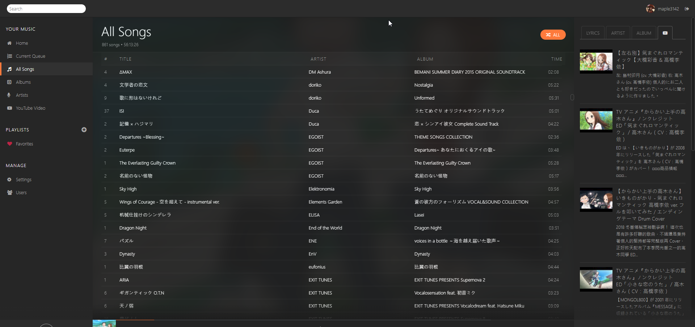

koel 是一個用 Laravel+Vue.js 做的開源音樂串流伺服器架設好之後是蠻方便的，在手機 ipad 之類的裝置上只要打開瀏覽器就能直接播放電腦上的音樂
這篇文章是一篇簡單的在 Windows 上建立 koel 伺服器的教學
官方教學: Koel docs
不過官方的教學稍微簡略了一些，對 Windows 使用者來說可能不是簡單的能依照上面搞定，因此才有這篇文章的出現
預覽圖:

前置準備
所有的指令請在有管理員權限的 powershell 下執行
Chocolatey
為了能輕鬆的安裝必要的軟體，需要先安裝 Chocolatey
官方的安裝教學
執行下面這行指令1
Set-ExecutionPolicy Bypass -Scope Process -Force; iex ((New-Object System.Net.WebClient).DownloadString('https://chocolatey.org/install.ps1'))
然後執行 choco -v 指令，如果沒有出現錯誤並顯示版本號就代表安裝成功了
php & composer
執行:1
choco install php composer -y
然後可能要稍微等一段時間下載與安裝完成後可以用 php -v 和 composer -V 來看有沒有安裝成功
接下來 koel 需要啟用一些 php 的 extension 才能正常使用
執行:1
2
3
4
5
6php --ini
# 輸出:
# Configuration File (php.ini) Path: C:\WINDOWS
# Loaded Configuration File: C:\tools\php72\php.ini
# Scan for additional .ini files in: (none)
# Additional .ini files parsed: (none)
然後用文字編輯器打開 Loaded Configuration File: 後面顯示的檔案
在檔案中找到 ;extension=exif,;extension=pdo_sqlite,;extension=fileinfo
分別改成 extension=exif,extension=pdo_sqlite,extension=fileinfo 然後儲存檔案
node.js & yarn & git
執行:1
choco install nodejs yarn git -y
一樣能透過 node -v 和 yarn -v 檢查是否安裝成功
這個就沒有什麼東西需要額外設定的了
安裝
下載
這邊假設想把 koel 安裝到 D:\koel 的位置
執行:1
2
3
4
5
6cd D: # 切換到 D 槽
git clone https://github.com/phanan/koel.git koel # 後面的 koel 是資料夾名稱
cd koel # 進入資料夾
git checkout v3.7.2 # 在 https://github.com/phanan/koel/releases 檢查最新版的版本號
composer install # 安裝一些必要的 package
New-Item database/e2e.sqlite -type file # 建立資料庫檔案 database/e2e.sqlite，之後會用到
要把上面的指令執行完成可能也要不少時間，尤其是
composer install最慢(大概 5 分鐘)
設定
再來是要執行 php artisan koel:init ，這個指令會互動式的問好幾個問題
例如音樂的資料夾位置，管理員的名稱、信箱、密碼
不過其中有一項是 Database (資料庫)，這一項請輸入 sqlite
然後後面問你的 sqlite 位置請填 D:\koel\database\e2e.sqlite (絕對路徑，前面要根據你的資料夾位置更改)
如果前面詢問音樂資料夾時已經有填入位置的話，建議先執行
php artisan koel:sync來初次更新資料庫
到這邊安裝已經完成了，輸入 php artisan serve 然後打開 http://localhost:8000 應該就能看到登入介面
輸入前面所設定的 email 和密碼之後就能進到介面並在瀏覽器中享受音樂
如需在網頁介面設定音樂資料夾位置的話
進入左側Settings
然後在Media Path欄位填音樂資料夾的絕對路徑
更改 port
如果不想要使用 port 8000 的話可以把指令改成php artisan serve --port=1234 這樣就會讓 port 開在 1234
允許同 wifi 使用 koel
執行指令 ipconfig 應該能看到自己在 wifi 下的 ip，例如我是 192.168.0.20
如果在手機或其他在同個 wifi 下的裝置用瀏覽器瀏覽 192.168.0.20:8000 時已經可以的話建議可以跳過這一段
在 koel 的資料夾下用文字編輯器打開 .env，並找到一行 APP_URL=xxx
把 xxx 改成 http://192.168.0.20 這樣的網址 請自己替換成正確的 ip
然後未來的啟動伺服器指令要改成 php artisan serve --host=192.168.0.20 才能使用 192.168.0.20 來連接
背景自動啟動
背景啟動
自動啟動如果直接使用 batch 來做會導致視窗不會關掉的問題，所以會使用到 vbscript
在 koel 的資料夾底下建立一個檔案叫 init.vbs
內容打上:1
CreateObject("WScript.Shell").Run "php artisan serve --host=192.168.0.20",0,True
中間的字串要改成自己要的啟動指令
這樣只要在 init.vbs 上點兩下就會自動啟動伺服器並讓視窗消失
開機自動執行
按下 win+R，在執行的視窗中輸入 shell:startup 並按確定就會打開一個資料夾
這個資料夾裡的檔案在開機時都會被自動執行，所以要在這邊建立 initkoel.bat
內容則打上:1
2cd /d D:\koel
start /b init.vbs
要把 cd 的路徑改成你的 koel 資料夾
如果不是放在C:，就不能把\d拿掉
Youtube & Last.fm
官方的教學: https://koel.phanan.net/docs/#/3rd-party
待補…